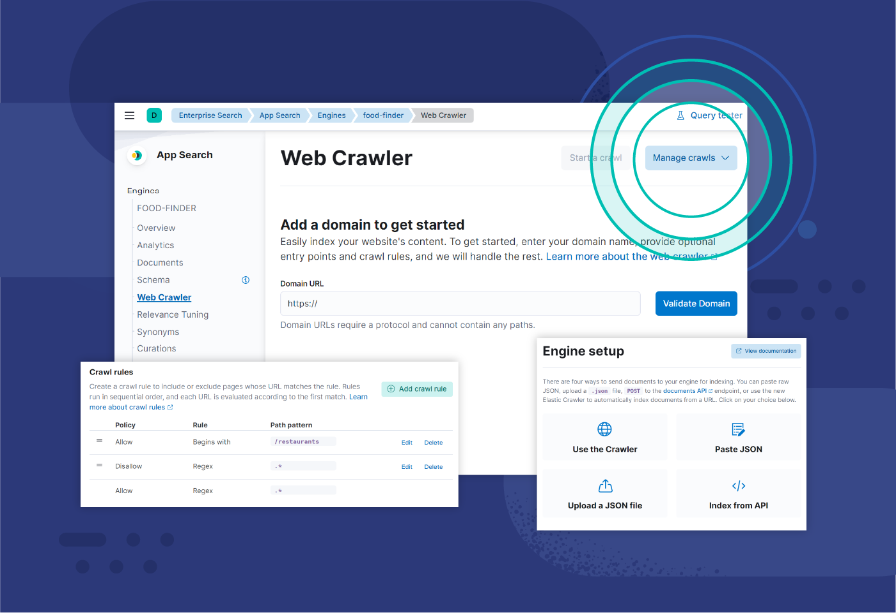

Un moteur de recherche est, comme son nom l'indique, un outil qui permet de rechercher sur le Web (mais aussi sur un ordinateur personnel) des ressources, des contenus, des documents etc., à partir de mots clés. Il suffit de renseigner les expressions qui forment la requête et le moteur de recherche déniche automatiquement les ressources correspondant à la recherche. Les résultats apparaissent organisés selon une logique propre à chaque moteur.
Pour exercer sa mission et offrir les réponses les plus pertinentes à une recherche, le moteur de recherche parcourt le web et référence les pages Internet selon leurs contenus. Cette opération est réalisée par ce que l'on appelle un robot d'indexation, spider ou crawler.
Un robot d'indexation est un robot de moteur de recherche numérique qui utilise la copie et les métadonnées pour découvrir et indexer des pages de site. Également connu sous le nom d'araignée, ce robot explore Internet pour apprendre de quoi telle ou telle page traite. Il indexe ensuite les pages et stocke les informations en vue des futures recherches ultérieures. L'indexation consiste à organiser les données selon un schéma ou une structure spécifique. C'est un processus qui permet au moteur de recherche de faire correspondre des résultats de recherche pertinents à une requête en s'appuyant sur les données indexées. Ainsi, un robot d'indexation est un outil qui facilite l'exploration du web. Il existe une différence entre les robots d'indexation sur Internet et les robots d'indexation d'entreprise. Un robot d'indexation sur Internet parcourt Internet et repousse de façon continue les frontières de l'exploration en découvrant de nouveaux sites et en les indexant. Un robot d'indexation d'entreprise parcourt le site web d'une entreprise spécifique pour indexer les données de ce site et les rendre consultables dès qu'un utilisateur émet une requête à l'aide de la fonction de recherche du site. Il peut également servir d'outil d'entreprise pour automatiser certaines recherches.
Un robot d'indexation découvre de nouvelles pages, les indexe, puis stocke les informations en vue d'une utilisation ultérieure. Il peut explorer votre contenu à intervalles réguliers pour s'assurer que les résultats de vos recherches restent à jour et que vous puissiez les consulter.
Pour collecter des informations à partir du plus grand nombre possible de sites ou de pages en ligne, un robot d'indexation passera d'un lien à l'autre sur les pages. Un robot d'indexation commence avec une URL connue, ou graine, puis découvre de nouveaux sites auxquels il accède à partir des liens qui se trouvent sur cette page. Il répète ce processus encore et encore, cherchant constamment de nouvelles pages. En raison du nombre faramineux de pages en ligne et du fait que les informations soient constamment mises à jour, ce processus peut se poursuivre presque indéfiniment. Les liens que le robot d'indexation trouve et mémorise pour une future découverte constituent ce qu'on appelle les frontières de l'exploration. Ces liens hypertexte sont ensuite consultés dans un ordre déterminé selon un ensemble de principes ou de règles d'exploration. Parmi ceux-ci, on trouve des principes de sélection, de re-visite, de politesse et de parallélisation. Un robot d'indexation prendra en compte le nombre d'URL pointant vers une page donnée et le nombre de visites sur cette page, ce dans l'optique de découvrir et d'indexer le contenu important. La logique qu'il applique est la suivante : plus une page est consultée et citée, plus les informations qu'elle contient sont fiables et de haute qualité. Il est donc primordial que le moteur de recherche ait connaissance du site et qu'il puisse en permettre la découverte.
Lorsqu'un robot d'indexation découvre une nouvelle page, il effectue un rendu des informations qu'elle contient, que ce soit au moyen d'une copie du site ou de balises méta, puis il télécharge ces informations et les indexe. Certains robots d'indexation peuvent accéder ou lire uniquement les pages publiques, tandis que d'autres sont autorisés à indexer des pages authentifiées. Ils se conforment également aux exigences des fichiers robots.txt et des balises méta noindex. Un fichier robots.txt est un grand livre de règles pour les pages en ligne, qui détermine les liens qu'un robot doit suivre et définit les informations qu'il peut indexer. Une balise méta noindex indique les éléments qui ne doivent pas être indexés.
Le but des robots d'indexation est d'indexer et de télécharger les informations sur des sites spécifiques. Les robots d'indexation repoussent toujours plus les frontières de l'exploration, en recherchant d'autres sites, d'autres pages et des mises à jour. Par conséquent, ils continuent à augmenter le volume de données indexées des moteurs de recherche. Avec l'aide des araignées, les algorithmes des moteurs de recherche peuvent trier les index créés par les robots d'indexation afin qu'ils puissent être extraits et classés dans les résultats lors d'une requête.
Apparaître en tête des résultats sur internet est l'objectif de beaucoup de sites. Pour y parvenir, il faut connaître les facteurs de positionnement du moteur de recherche et optimiser son site pour faciliter le travail d'indexation des robots. Lorsqu'ils doivent indexer de grandes quantités de données, les moteurs de recherche utilisent des algorithmes pour améliorer leurs résultats.
L'exploration du web est importante pour les entreprises car elle joue un rôle clé dans la fonctionnalité des moteurs de recherche. En effet, elle permet aux moteurs de recherche d'indexer les informations, en sachant quels sites et pages existent, afin de pouvoir y faire référence lorsque ceux-ci sont pertinents pour une requête.
L'exploration du web contribue à la réussite des stratégies en matière de SEO et de recherche, en particulier parce qu'elle facilite la découverte des sites web et informations des entreprises. Sans exploration initiale, les moteurs de recherche ne peuvent pas savoir que votre site ou les données de votre entreprise existent. Par ailleurs, il peut être utile de procéder à une exploration interne de votre site. Vous pourrez ainsi gérer les données de votre site, en les maintenant à jour et en assurant leur pertinence, afin que vous ayez accès aux informations appropriées lors d'une requête et que vous puissiez atteindre les publics concernés.
Il est également essentiel d'utiliser un robot d'indexation pour optimiser les fonctions de recherche de votre site web. Étant donné que le robot d'indexation indexe les données de votre site (sans que cela soit un casse-tête pour vous), vous pouvez offrir aux utilisateurs une expérience de recherche fluide. Et il y a de grandes chances que ceux-ci deviennent des clients.
Un robot d'indexation automatise la récupération des données. Il vous permet d'attirer des visiteurs vers votre site web en effectuant des explorations internes et externes. Vous pouvez ainsi vous consacrer à la création de contenus et apporter des changements stratégiques selon les besoins. Pour faire court, l'exploration du web est un élément important dans la réussite de votre entreprise, tout comme la capacité d'exploration de votre site. Google est aujourd'hui le moteur de recherche le plus utilisé dans le monde. Plus de 90 % des requêtes des internautes passent en effet par l'outil de recherche du géant américain. Yahoo Search, Qwant ou encore Bing sont quelques-uns de ses concurrents. La plupart proposent des fonctionnalités pour affiner les recherches par type de contenu, langue, date de la dernière mise à jour, etc.
Google, Yahoo Search, Bing, Qwant, Firefox...